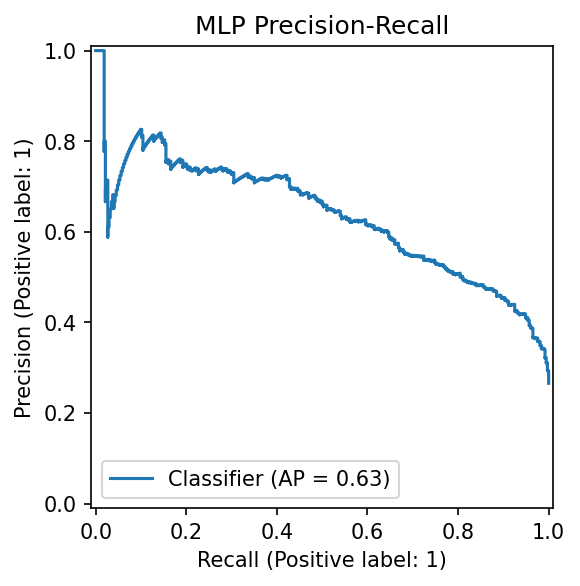
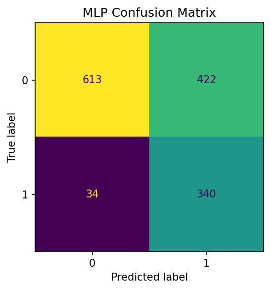

Situation - problema de churn
Uma operadora de telecom precisa identificar clientes com maior risco de cancelamento para priorizar ações de retenção antes que o churn aconteça.
O dataset escolhido foi o Telco Customer Churn, com 7.043 registros e 21 colunas na base bruta. A variável alvo é Churn, indicando se o cliente cancelou ou não.
Task - entregar um pipeline profissional
O objetivo foi construir uma solução ponta a ponta: EDA, ML Canvas, baselines, MLP em PyTorch, tracking com MLflow, API FastAPI, testes automatizados, Model Card e plano de monitoramento.
Action - EDA e sinais de negócio
Na EDA, foram analisados tipos das colunas, valores ausentes, duplicados, distribuição da target e comportamento das principais variáveis.
Também foram tratados dois pontos importantes: TotalCharges, que vinha como texto, e customerID, removido da modelagem por ser apenas identificador.

Action - baselines, MLP e custo
Os baselines foram DummyClassifier, LogisticRegression e RandomForestClassifier, com pipeline de preprocessamento, seed fixa e validação cruzada estratificada.
A MLP em PyTorch usa duas camadas ocultas, 64 e 32 neurônios, ReLU, dropout de 0.2, BCEWithLogitsLoss com ponderação da classe positiva, batching e early stopping.
| Modelo | PR-AUC | ROC-AUC | Recall | Melhor custo |
|---|---|---|---|---|
| MLP PyTorch | 0.6348 | 0.8429 | 0.9091 | 13.780 |
| Logistic Regression | 0.6334 | 0.8419 | 0.7059 | 14.380 |
| Random Forest | 0.6055 | 0.8171 | 0.6578 | 17.060 |



Action - API, testes e documentação
O modelo final foi integrado em uma API FastAPI com os endpoints /health e /predict. A API valida a entrada com Pydantic, usa o mesmo preprocessador do treino e retorna probabilidade, classe prevista, threshold e versão do modelo.
A entrega também inclui README, Model Card, análise de custo, arquitetura de deploy, plano de monitoramento e roteiro STAR para o vídeo.
Result - decisão final
A regressão logística foi um baseline muito forte, mas a MLP ficou levemente melhor em PR-AUC e ROC-AUC. A escolha final veio da análise de custo: com threshold operacional de 0.25, a MLP teve o menor custo esperado.
Texto corrido para narração
Olá, eu sou o Marcello, e este é o meu projeto do Tech Challenge Fase 01. Neste trabalho eu desenvolvi uma solução completa para previsão de churn em telecom. A ideia é ajudar uma empresa a identificar quais clientes têm maior risco de cancelamento, para conseguir agir antes e priorizar campanhas de retenção.
O dataset escolhido foi o Telco Customer Churn, com 7.043 registros e 21 colunas. A variável alvo é Churn. Durante a EDA, tratei TotalCharges, removi customerID e encontrei sinais importantes em contrato Month-to-month, internet Fiber optic e pagamento por Electronic check.
Depois montei baselines com DummyClassifier, LogisticRegression e RandomForestClassifier. Em seguida implementei uma MLP em PyTorch com duas camadas ocultas, ReLU, dropout, batching, early stopping e BCEWithLogitsLoss com ponderação da classe positiva.
A métrica principal foi PR-AUC, porque o foco é identificar bem clientes com risco de churn. A MLP chegou a PR-AUC de 0.6348 e ROC-AUC de 0.8429. Na análise de custo, usando falso positivo com custo 20 e falso negativo com custo 200, o melhor threshold foi 0.25, com custo esperado de 13.780.
Para fechar, integrei o modelo em uma API FastAPI com /health e /predict, valida entrada com Pydantic, logging estruturado, testes automatizados e documentação completa com Model Card, arquitetura de deploy e plano de monitoramento.
Fechamento: o projeto entrega dados, experimentos, MLP, API, testes e documentação. A escolha da MLP foi baseada em métrica técnica e no menor custo esperado para churn.
Limitações e próximos passos
O custo usado é uma hipótese de negócio, não houve validação temporal e o modelo precisaria de monitoramento em produção para drift, distribuição de score e performance.
Como próximos passos: publicar a API em nuvem, monitorar dados e modelo, e criar uma rotina periódica de revalidação e retreino.